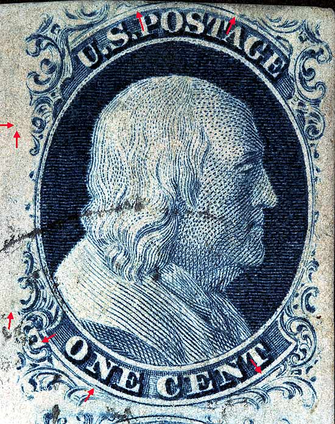
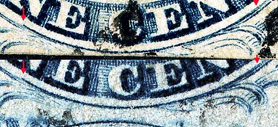
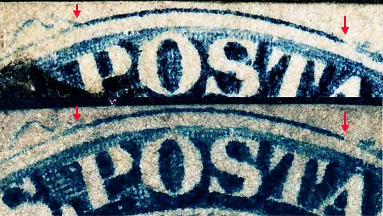
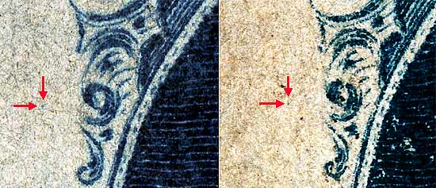
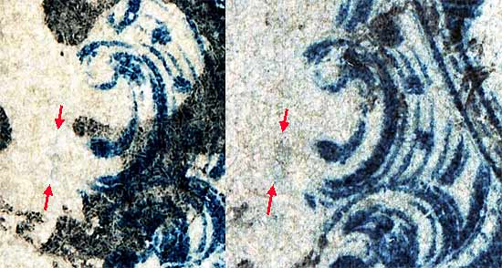

1¢ Franklin Issue of 1851-1857, PLATE 1 LATE. Pos 71R1L, (Scott #9) |
| Scott #9 Blue, Type IV, Relief A Issued both imperforate and perforated. Perforated copys are more scarce. SINGLE RECUT TOP, The Ashbrook/Neinken plating diagrams for this position are incorrect. The plating marks illustrated on p173 of Ashbrook and p158 of Neinken for Position 51R1L actually belong to Position 71R1L. This has been confirmed using pairs and strips from multiple contributors. Images Courtesy of John and Gilda Messmer |
|  |
| Figure 1. (Below) Detail view of the BOTTOM RECUT Line. The left end of the recut is "SPLIT" above the original curved line under the N of ONE. The right end of the recut ends under the T of CENT. This would technically make the recut a "LONG RECUT" variety.
 |
| Figure 2. (Below) Detail of TOP RECUT Line. The top recut is high above POS of POSTAGE and ends between the T and A.
 |
| Figure 3. (Below) Detail of a small dot plating mark to the west of Ornament C. This mark is illustrated on the Ashbrook/Neinken plating diagram for 51R1L.
 |
| Figure 4. (Below) Detail of the near vertical blurry line plating mark to the west of Ornament G. This mark is illustrated on the Ashbrook/Neinken plating diagram for 51R1L.
 |
| DISCLAIMER and COPYRIGHT INFORMATION: Thanks for visiting this site. I hope you learn something new as we are making new discoveries all the time. You, the visitor, have my permission to link to my pages and to share the INFORMATION with others. The images themselves fall under the fair use guidelines established by the United States Congress and Copyright law. Basically contact us before using. I also ask in return that you send me an e-mail if I have made a mistake, or have made some other technical blunder that in my rush to put these pages up would cause the visitor confusion. Please also visit my other website at www.slingshotvenus.com. and support the live music arts. While your there, be sure to purchase our music. There are not many philatelic rock stars around and we need all the help we can get. :-) I can be reached at: nerdman@ix.netcom.com REVISED 7/25/06 |